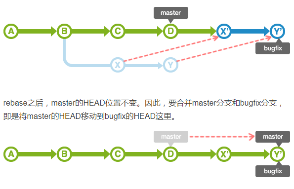

你应该要知道的git使用
分支
在开发软件时，可能有多人同时为同一个软件开发功能或修复BUG，可能存在多个Release版本，并且需要对各个版本进行维护。
什么是分支
分支是为了将修改记录的整体流程分叉保存。分叉后的分支不受其他分支的影响，所以在同一个数据库里可以同时进行多个修改。
此外，分叉的分支可以合并
master分支
在数据库进行最初的提交后, Git会创建一个名为master的分支。因此之后的提交，在切换分支之前都会添加到master分支里
merge分支和topic分支的运用
merge分支
Merge分支是为了可以随时发布release而创建的分支，它还能作为Topic分支的源分支使用。保持分支稳定的状态是很重要的。如果要进行更改，通常先创建Topic分支，而针对该分支，可以使用Jenkins之类的CI工具进行自动化编译以及测试。
通常，大家会将master分支当作Merge分支使用。
topic分支
Topic分支是为了开发新功能或修复Bug等任务而建立的分支。若要同时进行多个的任务，请创建多个的Topic分支。
Topic分支是从稳定的Merge分支创建的。完成作业后，要把Topic分支合并回Merge分支。
分支的切换
checkout操作就可以切换作业的分支，checkout之后的提交记录将被追加到目标分支。
head
HEAD指向的是现在使用中的分支的最后一次更新。通常默认指向master分支的最后一次更新。通过移动HEAD，就可以变更使用的分支。
提交时使用~(tilde)和^(caret)就可以指定某个提交的相对位置
HEAD后面加上~(tilde）可以指定HEAD之前的提交记录
“^”代表父提交,当一个提交有多个父提交时，可以通过在”^”后面跟上一个数字，表示第几个父提交，”^”相当于”^1”
~
statsh
还未提交的修改内容以及新添加的文件，留在索引区域或工作树的情况下切换到其他的分支时，可以先保存当前的内容切换到其他分支，做完其他分支之后，可以切换到原来的分支，回复暂存的内容继续开发
- 暂存内容
git stash - 恢复内容
切换到分支之后，执行
git stash pop，可以恢复暂存的东西
分支的合并
合并分支有2种方法：使用merge或rebase
merge合并
- fast-forward（快进）合并
如果master分支的状态没有被更改过，那么这个合并是非常简单的。 bugfix分支的历史记录包含master分支所有的历史记录，所以通过把master分支的位置移动到bugfix的最新分支上，Git 就会合并。这样的合并被称为fast-forward（快进）合并。
- non fast-forward
但是，master分支的历史记录有可能在bugfix分支分叉出去后有新的更新。这种情况下，要把master分支的修改内容和bugfix分支的修改内容汇合起来。因此，合并两个修改会生成一个提交。这时，master分支的HEAD会移动到该提交上。
rebase合并
首先，rebase bugfix分支到master分支, bugfix分支的历史记录会添加在master分支的后面。如图所示，历史记录成一条线，相当整洁。
这时移动提交X和Y有可能会发生冲突，所以需要修改各自的提交时发生冲突的部分。rebase之后，master的HEAD位置不变。因此，要合并master分支和bugfix分支，即是将master的HEAD移动到bugfix的HEAD这里。

一般使用原则
在topic分支中更新merge分支的最新代码，请使用rebase。
向merge分支导入topic分支的话，先使用rebase，再使用merge。